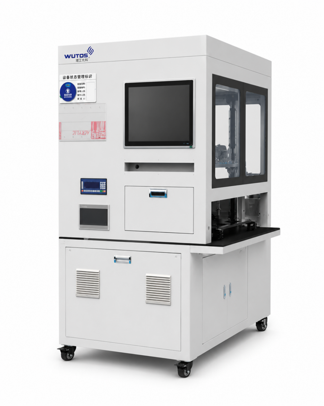

Active operation / 02移动热源
移动热源
进行中
设备处于可控检测窗口。四波长采集已开启，当前阶段不建议切换产品配置。
04/06A 类合格
01:42阶段计时
12.4mV参考峰值
0.8%波动噪声

GHT-1050-02 · FACTORY READINESS CONSOLE
设备处于可控检测窗口。四波长采集已开启，当前阶段不建议切换产品配置。

A 类合格
A 类合格
B 类合格
A 类合格
等待采样
A 类合格
当前检测窗口预计在 60 秒内完成。移动热源回到初始位后，记录门禁才会开启。